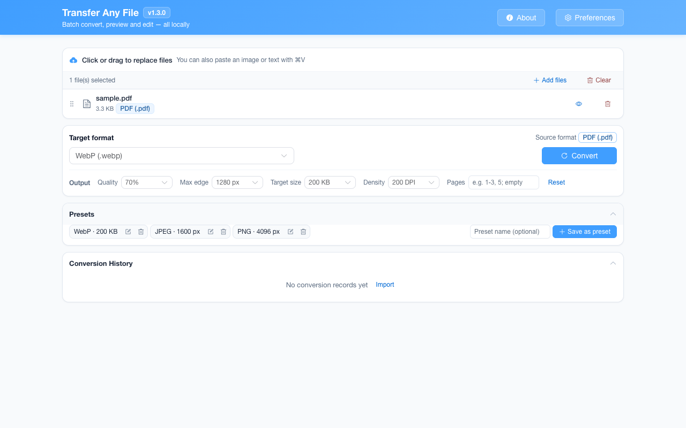

离线 · 无上传 · 浏览器本地完成Offline · no uploads · runs in the browser
HTML 转 PNG——本地整页栅格化，长图一次拿到HTML to PNG locally — the whole page as one tall image
这一条的价值在于"整页"：普通截图工具给的是可视区，而这个转换按内容的真实高度出图，所以一份长报告、一页长表格能一次拿到一张完整长图。做法是把 HTML 装进一个沙箱文档里渲染，宽度定在 800 px，高度按内容量出来。也正因为它是一次真实渲染，产物取决于你的浏览器怎么排版这份 HTML——这跟"HTML → PDF 再截屏"那种二次失真完全不是一回事。The point is the word *whole*: an ordinary screenshot tool gives you the viewport, while this route measures the content and returns one image as tall as it actually is — so a long report or a wide-but-wrapped table comes out complete in a single file. It works by rendering the HTML inside a sandboxed document at 800 px wide and measuring the height. And because that render is real, the output is how *your* browser lays the page out, which is a different thing from the second-hand degradation of rasterising a PDF.

这条链路怎么走How the route runs
HTMLHTML PNGPNG
共 1 步，由扩展的路径搜索自动选出，中间产物不落盘。1 step, chosen by the extension's own path search; intermediate results never touch the disk.
会保留什么What carries over
- 内容的真实高度：整页一张图，不是首屏拼图The content’s real height: one image of the whole page rather than a stitched first screen
- 文字编码为 UTF-8 之外的中文导出也读得动——解码按 UTF-8 → GB18030 → GBK 依次兜底，不会把乱码渲染成图片Chinese documents saved outside UTF-8 still read correctly — decoding falls back UTF-8 → GB18030 → GBK, so mojibake is never rendered into a picture of mojibake
- 样式表与页面自身的排版规则参与渲染，字号、颜色、边框、圆角、表格线都按 CSS 实际效果出图Stylesheets and the page’s own layout rules take part, so sizes, colours, borders, radii and table rules come out as the CSS says
- 渲染倍率按页面高度自动选：短页面 2 倍，超过 2000 px 降到 1.5 倍，超过 4000 px 降到 1 倍——避免"长图必糊"也避免内存爆掉Render scale follows page height automatically: 2x on short pages, 1.5x past 2000 px, 1x past 4000 px — which avoids both "tall means blurry" and an allocation that fails
- PNG 无损：这条路的产物不会再叠一层有损压缩。底色定成纯白，页面自己没写 background 时也是白，不会带出透明区域PNG is lossless, so this route adds no lossy pass on top. The backdrop is fixed white: a page that never declares a background still comes out on white rather than on transparency
- 最长边与目标体积这类输出参数在终点编码生效，可以把长图缩到聊天软件能收的尺寸Output parameters such as longest edge and target size act at the final encode, so a tall image can be shrunk to what a chat app will accept
如实说明的限制What it does not do
- 图片按引用取不到字节：文档里以网络地址或相邻路径引用的 `<img>`，在离线前提下不会去请求——它们渲染前就被换成虚线占位框，位置留着、内容不猜；只有解不开的 data: 或已撤销的 blob: 会在那处直接留空Pictures referenced by URL or by a sibling path cannot get their bytes: under the offline guarantee nothing is requested, so they become dashed placeholder boxes before rendering — the position is kept, the content is not guessed. Only an undecodable data: or an already-revoked blob: leaves that position empty
- 丢了几张图会在结果卡片上按张数写明，不会静默给你一张"看起来少了图"的长图How many positions were affected is counted on the result card, so you never receive a silently image-less tall image
- 脚本不执行：由 JS 现算的图表、懒加载内容、需要交互才展开的区域，都不会出现在图里Scripts do not run, so charts computed in JS, lazy-loaded sections and anything that needs interaction to appear are absent from the image
- 外部字体与 CSS 里的远程 `@import` 同样取不到，字体会回落到系统栈Web fonts and remote `@import` rules cannot be fetched either, so type falls back to the system stack
- 宽度定在 800 px，不接受视口参数；iframe 与远程嵌入内容不会渲染The width is fixed at 800 px with no viewport parameter, and iframes or remote embeds do not render
- 产物是像素：图里的文字不可选中、不可复制（这条与所有"到图片"的路一致）The output is pixels: text in it is not selectable or copyable, as on every route to an image
- 整页高度有上限：超出浏览器单次渲染能吃的长度时直接报错，而不是给你一张内容不全的长图——那种文档请拆成更短的部分分批转换Page height has a ceiling: past what the browser can render in one pass the conversion reports an error instead of delivering a tall image missing content — split such a document and convert the parts separately
实操提示Working with it
- 想让图片进这张长图：把图片内联成 data URI，这是离线条件下唯一能拿到字节的途径To get pictures into the tall image, inline them as data URIs — under the offline guarantee that is the only way their bytes can arrive
- 渲染有超时保护（等待图片、测量、克隆各有一段），一份特别复杂的 HTML 可能超时而不是一点点磨出来Rendering is time-boxed (separate budgets for waiting on images, measuring and cloning), so a very heavy document may time out rather than grind forever
- 同一份 HTML 还可以转 PDF（可复制文字、A4 分页）或 DOCX；要"发给人看的长图"才用这条The same HTML can go to PDF, which keeps copyable text and A4 pages, or to DOCX; take this route when you specifically want one tall image
常见问题Questions people actually ask
为什么图里有几个虚线方框？Why are there dashed boxes in the image?
那是被有意留下的占位：原文档在那里引用了一张取不到字节的图片。本项目不去网络请求任何东西，所以宁可把位置标出来，也不按地址猜它长什么样。另有第二种形状：只在克隆到一半才失败的图（解不开的 data:、已撤销的 blob:）在那处直接留空，不画框。卡片上写明这一轮一共处理了几处。Those are deliberate placeholders where the document referenced a picture whose bytes could not be obtained. The extension requests nothing over a network, so it marks the position rather than guessing what lived there. There is a second shape: an image that fails only part-way through cloning — an undecodable data:, a revoked blob: — leaves that spot blank with no box drawn. The result card counts how many were handled in total.
长图能有多长？会不会失败？How tall can the image be, and can it fail?
这条链的上限是整页一次捕获的高度 32768 px（一边最大 8192 px 的四倍）：超过就明确报这次转换失败，而不是给你半张图或一片空白。另一个数字 8192 px 属于「最长边」那个参数，它在编码前按需重采样，与这条高度上限是两件事。页面越长、渲染倍率越低，也是在往同一个上限靠。The bound on this route is 32768 px on the height of the single whole-page capture — four times the 8192 px edge ceiling — and past it the conversion says so plainly instead of returning half an image or a blank one. The other number, 8192 px, belongs to the longest-edge parameter, which resamples before encoding and is a different matter from this height bound. The taller the page, the lower the render scale, which is the same pressure toward that ceiling.
HTML → PDF 和 HTML → PNG，我该选哪个？HTML to PDF or HTML to PNG — which do I want?
看要它做什么。要打印、要文字可复制可搜索、要分页：PDF。要发给只能在手机上滑着看的人、或要一张放进文章里的图：PNG。两者的排版都出自同一套渲染规则，所以内容一致，差别在容器与"是否还是文字"。It depends what the file is for. Print, copyable and searchable text, pagination: PDF. Someone scrolling on a phone, or an image to drop into an article: PNG. Both typeset from the same render rules, so the content agrees — the difference is the container and whether it is still text.
不需要账号，也不需要联网：装好扩展后点图标，在新标签页里打开工作台，文件从磁盘直接选。No account and no network: install the extension, click its icon, and the workbench opens in a new tab reading straight off your disk.
从 Chrome 应用商店安装Install from the Chrome Web Store 安装步骤Install steps GitHub 源码Source on GitHub